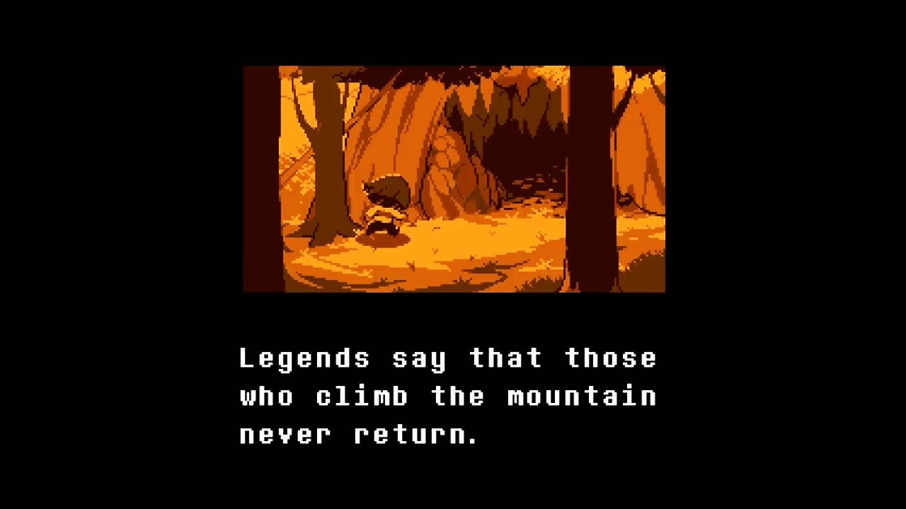
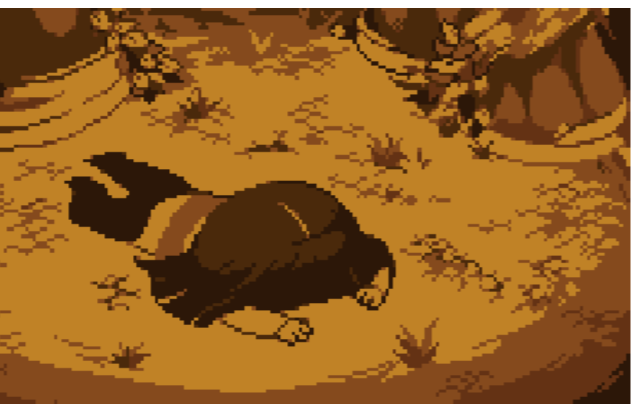
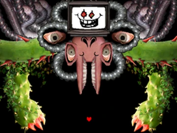

⏮ Ir al anterior
INDICE:
Varios años después de la guerra entre humanos y monstruos un octavo niño caería en las profundidades de lo que se conocía como el “underground” mientras paseaba por el monte Ebott en el año 20XX.
Muchas historias dicen, que aquellos que van al monte directamente desaparecen y nunca regresan. Aunque ahora que nos preguntamos, ¿Qué había exactamente en el monte? ¿La gente sabe lo que realmente había? Pues para fortuna o desgracia, este pequeño humano de nombre Frisk sin saberlo lo descubriría por su propia cuenta.
“Para atravesar esta ruta, se necesita que el protagonista haya matado al menos un monstruo, que no los haya matado a todos, que no haya hecho amistad con todos los personajes principales, o no haber accedido al Laboratorio Verdadero.”(WikiUndertale,2018)
La ruta neutral es la que normalmente la mayoría de jugadores consigue en su primera vez completando el juego. Simplemente consiste en jugar por tu cuenta, entre matar o dejar vivir a los monstruos. Las cosas transcurrirán con normalidad, desde la primera vez cayendo al Underground, los encuentros con los diferentes personajes, hasta la pelea contra el rey de los monstruos.
Al final Flowey quién al comienzo era una flor amarilla, terminaría convirtiéndose en un ser super poderoso al absorber el poder de las almas humanas que los monstruos tenían guardadas. A pesar de todo, gracias a nuestra determinación y a pesar de que este mismo manipule los datos de la partida logramos vencerlo con la ayuda de las almas humanas que se revelan en su contra, dejándonos con una última elección, matar o dejar vivir a Flowey.
Después de esto el juego terminaría con el humano saliendo del Underground, para después mostrarnos unos diálogos entre Sans el esqueleto y Frisk (el protagonista) los cuales están en una llamada un tiempo después de lo sucedido.
Cabe recalcar que la ruta neutral tiene como más de 90 variantes, ya que estas mismas depende de las acciones que haya tomado el jugador a lo largo del juego, como quien vive o muere, la relación que tuvo con los personajes, etc. Después de los diálogos Flowey aparece para darnos un consejo de como sacar la ruta neutral (solo ocurrirá si no lo matamos al final).
En esta ruta no debemos a matar A NINGÚN SOLO MONSTRUO, pero además de eso deberemos realizar ciertas interacciones con los personajes importantes para obtener acceso a una zona que es obligatoria de completar.
Al llegar al laboratorio de Alphis leeremos una carta que nos dejo diciendo que tiene algo que mostrar, dándonos acceso al laboratorio verdadero y a los experimentos que hicieron con la determinación.
Después de fijarnos en todos los detalles al volver a la batalla con Asgore este será detenido por Toriel y junto con ella venían todos nuestros amigos teniendo varias interacciones interesantes. Pero no todo sería bueno ya que todo era un plan por parte de Flowey para robarse las almas de todos y acceder a su forma verdadera.
No daré más spoilers solo, diré que al derrotarlo pacíficamente logramos convencerlo para que rompa la barrera del Undergound dejando salir a todos los monstruos de su encierro y finalmente comenzando una nueva vida, entre humanos y monstruos.
“Aunque, hay algo más, en lo más profundo de nosotros sabemos que hay algo más. Ya fuimos amables con todos los monstruos, pero que pasaría………………...si fuera lo contrario.”
La ruta genocida es pura maldad, vas a tener que matar absolutamente a TODOS los monstruos sin importar lo bien que te caigan, no es una ruta que siente especialmente bien si ya te has encariñado de los personajes de Undertale pero también es en mi opinión la mejor ruta, y es que el combate final es sin duda el más épico y difícil de todo el juego de lejos.(Silver,2017)

La música cambiará a esta cuando matemos a todos los monstruos correspondientes en cada zona.
Al llegar al bosque nevado antes de llegar a Snowdin al guardar partida nos dirá la cantidad de monstruos que deberemos matar por zona. Ignoraremos los puzles de Papyrus y Snowdin estará vacío porque todos huyeron. Al enfrentarnos a Papyrus este creerá que aún hay bondad en nosotros y querrá perdonarnos, grave error.
En Waterfall es poco más de lo mismo, solo que al llegar a un puente un pequeño monstruo nos confronta y al querer matarlo Undyne recibe el golpe diciéndole que se vaya, Undyne siente que morirá, pero algo dentro de ella hace que se rehúse a morir por lo que nos confronta por última vez estando DETERMINADA a detenernos.
Pero es solo un monstruo más.
En Hotland no habrá casi nadie por la zona poque Alphis evacuó a todos antes de que llegáramos y debemos matar a los pocos monstruos que no lograron huir mientras Mettaton sigue de molesto. Dejemos claro que matamos a todos incluyendo a Mettaton.
Flowey nos empezaría a contar su historia y nos dice que juntos podemos dominar el mundo de los humanos y de los monstruos, pero hay algo dentro del humano, una esencia que llena de miedo a Flowey y no le queda más opción que huir.
Llegamos al último pasillo con Sans donde este nos confronta, normalmente uno pensaría, que puede hacer un esqueleto vago como Sans que hasta para moverse tiene pereza, pues…
Pero a pesar de todo, lo que inicia se debe terminar. Encontramos a Asgore y no le da tiempo para reaccionar y también a Flowey quien suplicaba por su vida. Todo se oscurece y aparece frente a nosotros el primer humano caído, aquel que juro dominarlo todo, aquel que quería eliminarlo todo y a todos, aquel que se había convertido en la determinación del humano y la razón de todo el genocidio…CHARA. (Cabe recalcar que Chara adquiere el nombre que el jugador le pone al inicio del juego, pero Chara es su nombre real y el juego mismo nos lo deja saber al ponerlo)